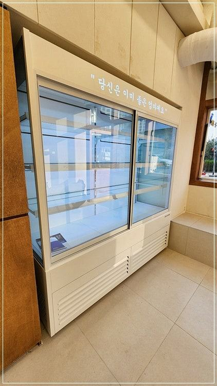

반찬(진열)쇼케이스
반찬쇼케이스 견적, 정확하게 받으려면 미리 준비할 정보

반찬쇼케이스 견적을 정확하게 받으려면 설치 자리의 폭·깊이·높이, 진열할 반찬 가짓수와 용기 규격, 손님이 직접 꺼내는지 직원이 담아 주는지를 먼저 정리해 가세요. 여기에 냉각 방식, 조명과 외관 색, 반입 경로와 오픈 일정까지 알려 주시면 여러 업체 견적도 같은 기준으로 비교할 수 있습니다.
안녕하세요. 반찬가게 매장 크기와 판매 방식에 맞춘 반찬쇼케이스를 제작하는 한성쇼케이스입니다.
반찬가게 창업을 준비하시면서 견적을 문의하면 대부분 크기가 어떻게 되느냐는 질문부터 받으실 겁니다. 그런데 크기만 알려 드리고 받은 견적은 업체마다 들어간 사양이 달라서, 금액을 나란히 놓고 비교해도 무엇이 싼지 판단하기 어렵습니다.
반찬쇼케이스는 반찬 통 크기와 진열 가짓수, 문 방향에 따라 내부 구성이 많이 달라지는 장비입니다. 정보를 미리 정리해 가면 상담 시간이 줄고, 나중에 사양이 바뀌어 견적이 다시 달라지는 일도 막을 수 있습니다.
오늘은 반찬쇼케이스 견적을 받기 전에 준비하면 좋은 정보를 항목별로 정리해 드리겠습니다.
1. 설치 자리 치수와 주변 조건
가장 먼저 쇼케이스가 들어갈 자리의 폭, 깊이, 천장까지 높이를 재 주세요. 벽면 하나를 다 채울지, 계산대 옆 일부만 쓸지도 정해 두시면 좋습니다.
기둥, 창문, 콘센트, 배수구 위치를 사진과 함께 보내 주시면 설계가 훨씬 정확해집니다.
반입 경로도 견적에 영향을 줍니다. 출입문 폭과 엘리베이터 크기에 따라 한 대로 만들지 나눠서 만들지가 달라지고, 그에 따라 구성과 설치 방식도 바뀌기 때문입니다.
- 설치 자리 폭·깊이·높이
- 기둥·콘센트·배수구 위치 사진
- 출입문·엘리베이터 치수
2. 반찬 가짓수와 용기 규격
몇 가지 반찬을 한 번에 진열할지, 어떤 크기의 반찬 통을 쓸지가 내부 구성의 기준이 됩니다. 사각 밧드를 쓰는지, 소분 포장 용기를 쌓아 두는지에 따라 단 높이와 선반 깊이가 달라집니다.
아직 용기를 정하지 않으셨다면 주력 반찬 몇 가지만이라도 담을 용기 크기를 정해 가세요. 김치류와 국물 반찬처럼 따로 두고 싶은 품목이 있다면 칸을 나눌지도 함께 알려 주시면 됩니다.


3. 판매 방식과 냉각 방식
손님이 직접 포장된 반찬을 꺼내 가는 방식이라면 앞문형이나 오픈형이, 직원이 뒤에서 덜어 담아 주는 방식이라면 뒷문형이 맞습니다.
이 결정에 따라 문 구조와 유리 형태가 달라지고 견적도 크게 바뀝니다.
냉각 방식은 매일 만드는 반찬 위주로 문을 자주 여닫는다면 간냉식, 김치와 장아찌처럼 오래 두는 품목이 많다면 직냉식을 검토해 보세요.
선호하는 방식이 있다면 미리 말씀해 주시고, 모르시겠다면 판매 품목을 알려 주시면 상담 때 함께 정해 드립니다.
4. 외관, 일정, 견적서 비교
외관 색과 조명 색, 상단에 상호를 넣을지 같은 디자인 요소도 견적에 들어갑니다. 인테리어 시안이 있다면 함께 보여 주세요.
오픈 예정일과 기존 장비 철거가 필요한지도 알려 주셔야 제작과 설치 일정을 맞출 수 있습니다.
견적서를 받으면 규격, 냉각 방식, 문 형태, 단 수, 조명, 설치 포함 여부, 무상 A/S 범위가 같은 조건인지 확인한 뒤 금액을 비교하세요.
조건이 다르면 금액 비교는 의미가 없습니다.
- 인테리어 시안과 원하는 색
- 오픈 예정일과 기존 장비 철거 여부
- 견적서 사양 항목 맞춰 비교
체크리스트
- 설치 자리 치수와 사진
- 반입 경로 치수
- 반찬 가짓수와 용기 규격
- 앞문·뒷문·오픈형 판매 방식
- 간냉식·직냉식 선호
- 외관·조명·오픈 일정
현장에서 자주 보는 경우: 획일적인 규격 때문에 버리는 공간이 생기는 반찬가게
1인 가구가 늘면서 반찬가게 창업 문의가 많아졌고, 그중에는 1200 폭 반찬냉장고를 맞춤으로 제작하시는 경우도 많습니다.
시중에 납품되는 냉장고는 모양과 사이즈가 획일적이라 매장에 넣고 나면 남는 공간이 생기기 쉬운데, 작은 반찬가게에서 버리는 공간이 늘수록 진열할 수 있는 반찬 가짓수가 줄어드는 셈입니다.
그래서 요즘은 처음부터 디자인과 사이즈를 매장에 맞춰 제작하는 방식을 많이 택하십니다. 견적을 비교하실 때는 유통 과정이 길수록 단계마다 수수료가 붙는다는 점, 그리고 고장이 났을 때 A/S를 누가 맡는지를 함께 보셔야 합니다.
직접 제조하는 곳이라면 상담부터 제작, 사후 관리까지 한곳에서 해결할 수 있습니다.



자주 묻는 질문
치수를 정확히 모르는데 견적을 받을 수 있나요?
대략적인 치수와 매장 사진만으로도 예상 구성을 먼저 안내해 드릴 수 있습니다. 다만 최종 견적은 실측 치수를 기준으로 확정하는 것이 정확합니다.
견적 받은 뒤 사양을 바꾸면 금액이 달라지나요?
크기, 문 형태, 냉각 방식처럼 구조가 바뀌는 사양은 금액에 영향을 줍니다. 그래서 견적 전에 판매 방식과 용기 규격을 미리 정해 두시는 것이 좋습니다.
견적 상담은 어떻게 신청하나요?
대표전화 031-986-2458로 연락 주시고, 오늘 정리한 정보를 함께 알려 주시면 상담이 빨라집니다.
공장 방문 상담도 가능합니다.
매장 조건에 맞춰 만드는 한성쇼케이스
원하시는 제품 사진과 설치할 공간 사진만 보내 주셔도 매장에 맞는 구성을 추천해 드립니다.
- 전국 240여 개 A/S 전담 센터 운영
- 본사 대량 자재 매입으로 품질 대비 합리적인 가격
- 유럽제·삼성 냉각 콤프레셔 적용
- 국내 최초 쇼케이스 전문 디자이너 상주
매장 폭과 원하는 진열 구성을 알려 주세요. 실측과 견적을 안내해 드립니다.
031-986-2458